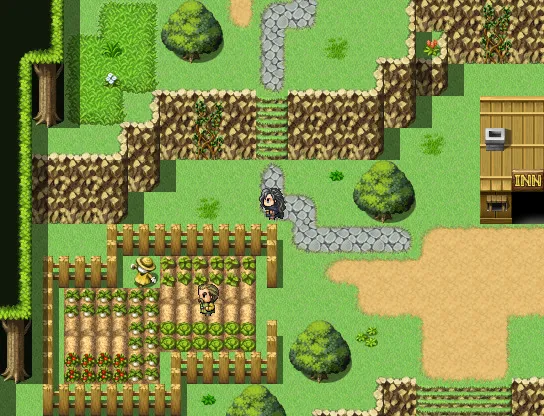

I tryed to make my game as good as posible and try to add new things that Mr.Smith has told us. We did many things like a dog that helped find stuff inside bushes.

We also added a plugin to make a voting system inside our game and when we did that he taught us some JS to go along with it. And we make holes that you have to jump
over but you can only do it if you have a feather or somthing. And we made a town where we have a reputaion system in place so we can do bad stuff and we lose reputaion
and that locks or unlocks some things. And we made a place that was a market for food. and with this market you can steal so if you get caught you lose reputaion and
gaurds start chasing you around. But when you don't you get the items that you steal and get to go shame or anything free. We also made it where you can cook food.
So here is my game. Click Here
I worked super hard on this game and we just added a time system to our games. And it really
helps to know what time it is and it adds things to look at.